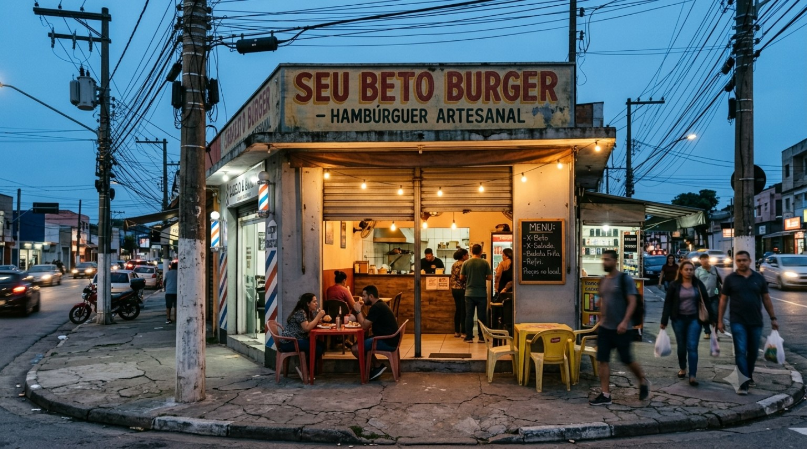
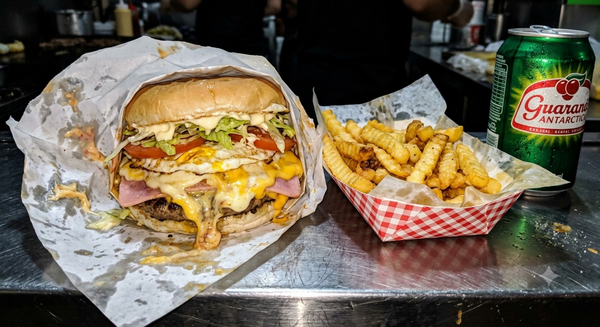
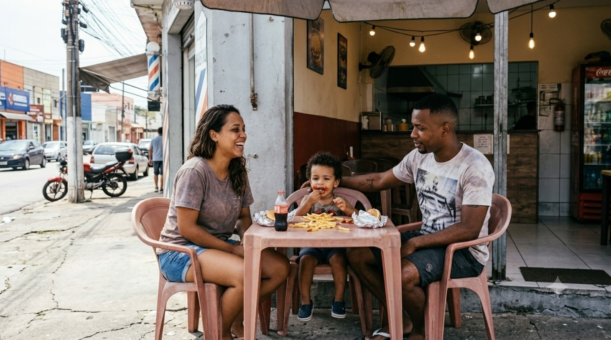
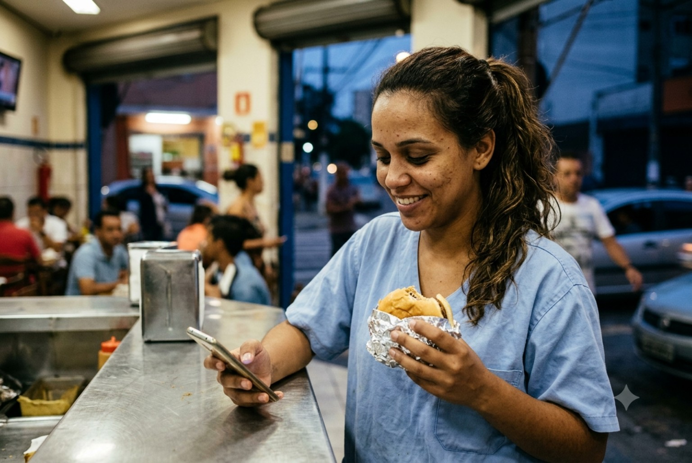

DESDE A CHAPA, SEM ENROLAÇÃO.O BURGER
O BURGER
DA ESQUINA.
Quando a fome chama, o bairro responde.
Topo • Reels/Stories/Display
Foco em reconhecimento local e identidade. CTA de descoberta.
Uma campanha visual inspirada na lanchonete brasileira clássica: chapa quente, atendimento próximo, preço direto e lanche sem frescura.

Comunicação direta, apetitosa e popular, valorizando porção, chapa e familiaridade.
Frases curtas, humor leve, linguagem de bairro e chamadas que parecem conversa no balcão.
Creme, vermelho queimado, mostarda, verde-garrafa, aço e textura de cartaz impresso.
Alcance, lembrança e desejo visual.
Produto, bastidor, prova social e preço.
Oferta clara, urgência e CTA para pedido.
Relacionamento, indicação e recompra.

Quando a fome chama, o bairro responde.
Foco em reconhecimento local e identidade. CTA de descoberta.

Chapa quente, ingredientes de verdade e aquele capricho que não cabe em filtro.
Humaniza a marca e transforma o preparo em prova de autenticidade.
X-Tudo + fritas. Peça no balcão ou chame no WhatsApp.
*Valor ilustrativo para mockup. Ajuste antes da campanha.Produto em primeiro plano, preço e chamada direta para conversão.

Na 5ª visita, desbloqueie uma recompensa da casa.
Recompra, vínculo local e programa simples de fidelidade.

Conecta ocasião de consumo à rotina da persona sem perder a linguagem popular.
📍 Lanche de bairro • chapa na hora • atendimento sem cerimônia.

Peça para mídia de proximidade, QR code e campanha “perto de mim”.
Figura narrativa para a campanha: presença na chapa, atendimento próximo e orgulho do produto. Use a imagem para bastidores, histórias da casa e assinatura humana da marca.
Adulto que busca refeição rápida, farta e acessível no trajeto entre trabalho e casa. Responde bem a conveniência, preço claro, proximidade e prova visual do produto.
As descrições acima são construções de marketing baseadas nas imagens fornecidas; não identificam nem atribuem dados pessoais às pessoas fotografadas.